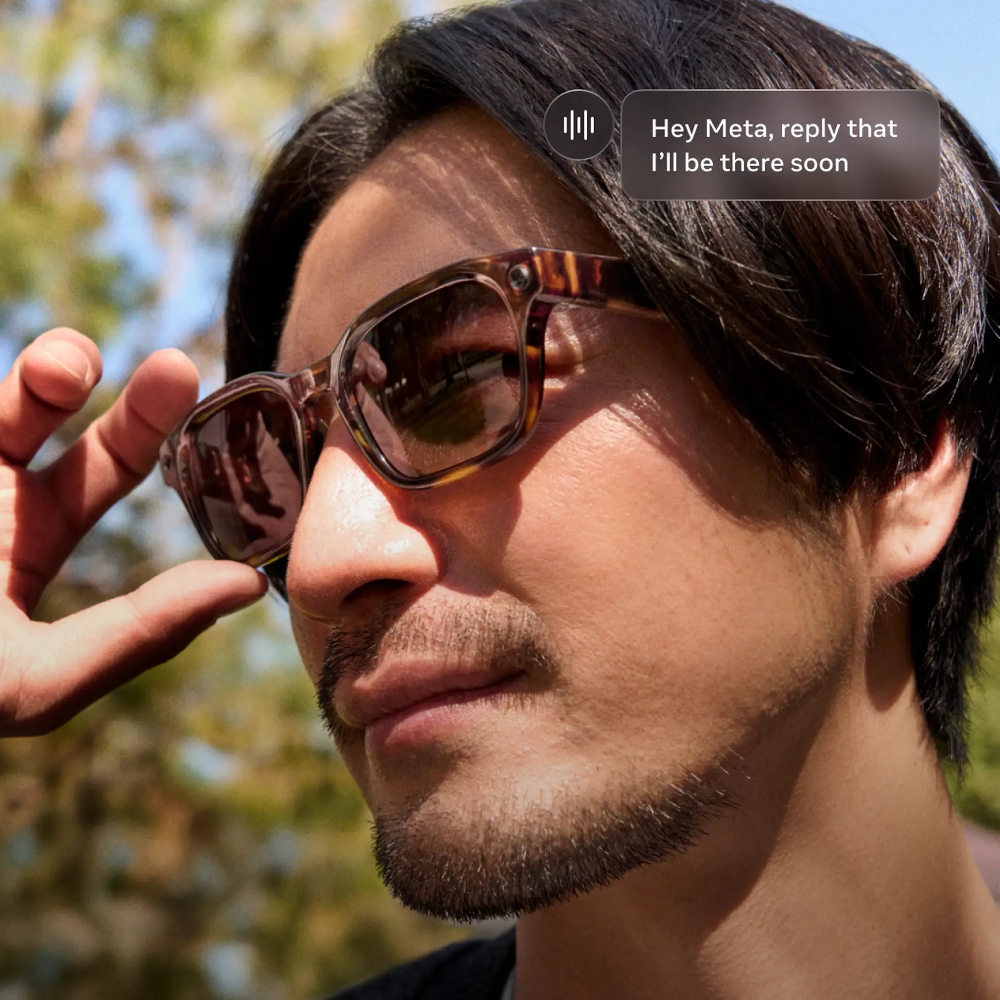
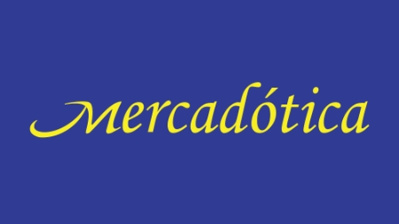
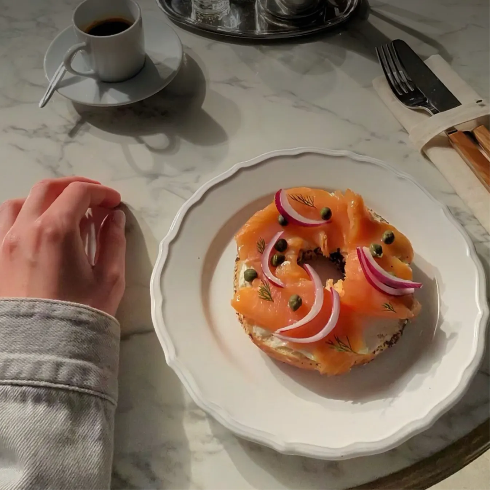
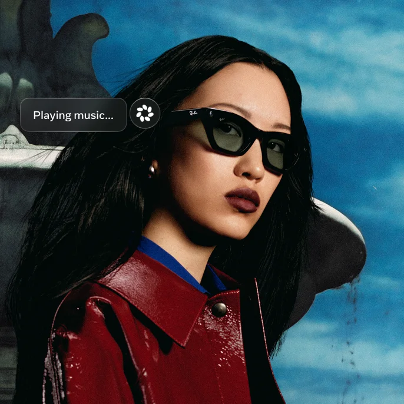
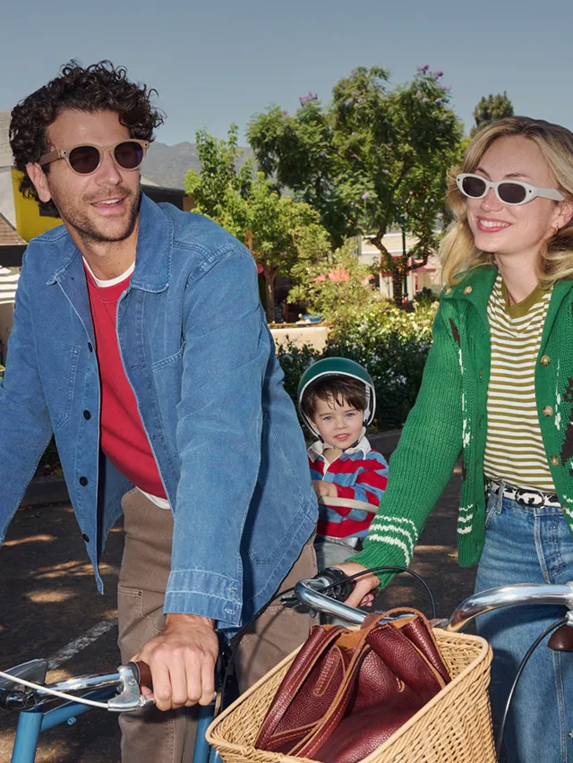
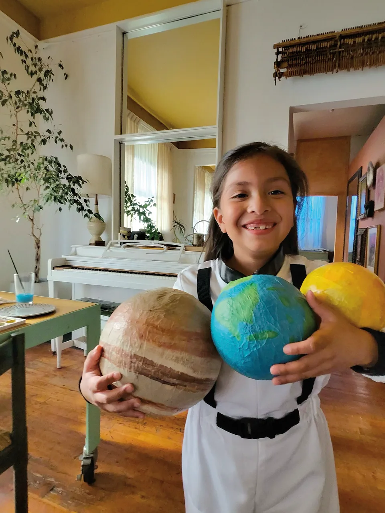
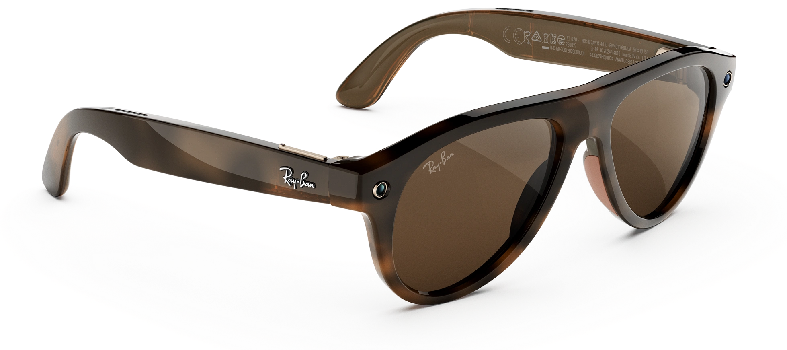
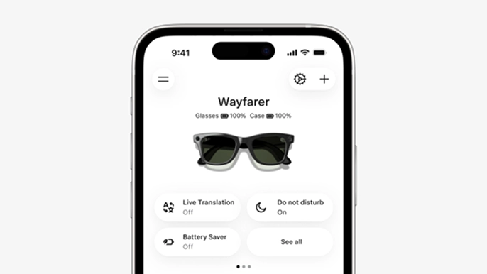
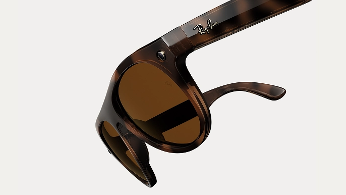

Mensagens de texto sem usar as mãos

Conheça os óculos com IA campeões de venda, agora com mais cores e novas tecnologias que você vai amar.
Capture a vida como você a vê com vídeo em 3K ultra HD e uma câmera mais fina e refinada. Basta pedir à Meta para começar a gravar, sem usar as mãos.

Perfeitos para quando suas mãos estão cheias, você pode enviar mensagens de texto ou voz, fazer ligações telefônicas e ligações de vídeo, tudo sem pegar seu telefone.
Conecte apps como o Spotify para ouvir com as mãos livres. Desfrute de ligações claras e áudio privado que se adaptam ao seu momento, mantendo a percepção do ambiente ao seu redor.

Alto-falantes discretos de ouvido aberto permitem que você atenda chamadas que só você ouvirá e envie e receba mensagens em diversos aplicativos, tudo sem usar as mãos.

Converse com a Meta AI para obter sugestões, respostas, lembretes e muito mais.


Veja como os óculos Ray-Ban Meta combinam estilo atemporal com tecnologia de ponta.


Use o app Meta para gerenciar seus óculos, personalizar configurações e pedidos de linguagem da AI.
Indicação visual de gravação, desligamento manual de câmera e controle total sobre seus dados.

Recursos de acessibilidade integrados para pessoas com diferentes necessidades visuais e auditivas.
Compre o Ray-Ban Meta agora: escolha modelo, cor e lentes para levar sua perspectiva ao próximo nível.